NAVA Research · 2025
AI & Visual Arts Practice
What 890 Australian creative practitioners told us about generative AI — and what it means for the sector
Context
Survey Overview
890 Australian visual artists and creative practitioners responded to a detailed survey about generative AI in their practice, including adoption, impact, concerns, and policy preferences.
Demographics
85% of respondents are visual artists or craftspeople
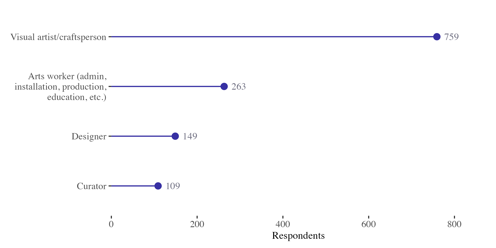
Demographics
28% of respondents live regionally or remotely
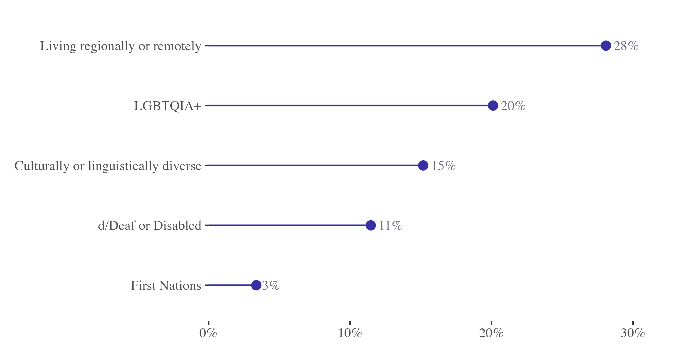
Adoption
Who Uses Generative AI?
Nearly half of creative practitioners now use AI tools, though the extent varies widely.
Adoption
46% of creative practitioners use generative AI
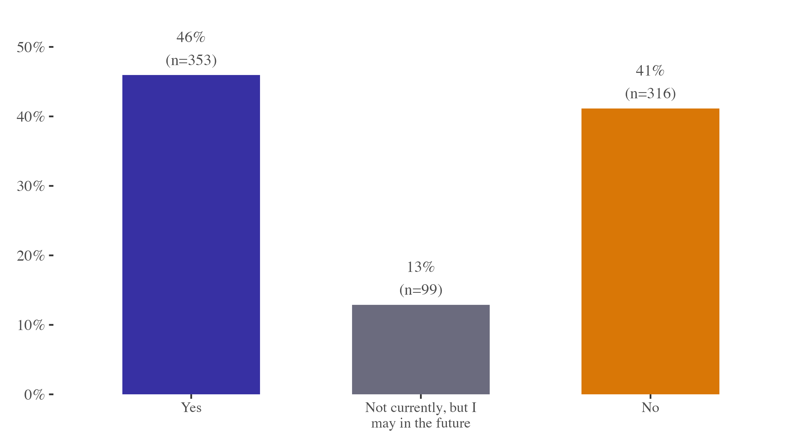
Adoption
Editing and drafting dominate — only 6% use AI for final artwork
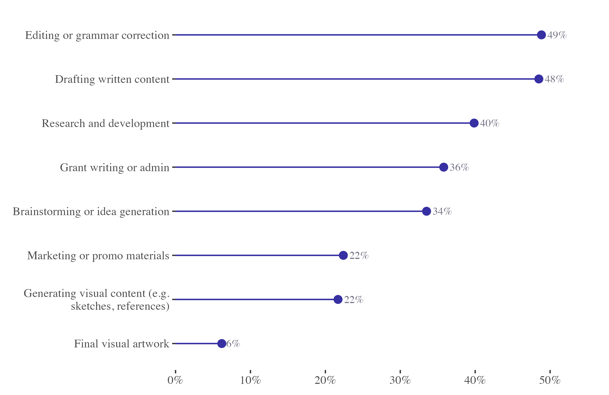
Adoption
Saving time is the primary motivation (36%)
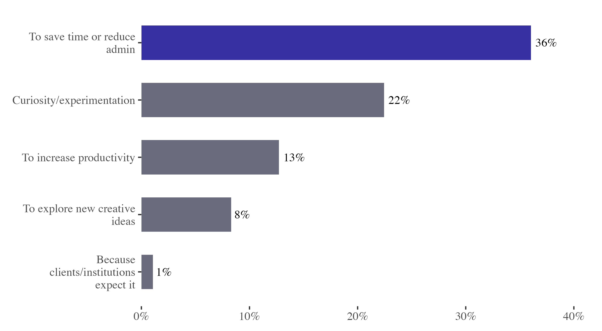
Adoption
81% say AI influences less than 10% of their final work

Adoption
ChatGPT dominates: mentioned by 60% of respondents
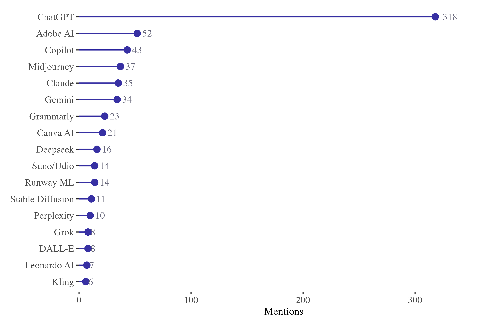
Impact
How Has AI Affected Visual Artists?
The sector is experiencing real disruption across work, income, trust, and authorship.
Impact
Time savings lead, but 32% report no positive impact
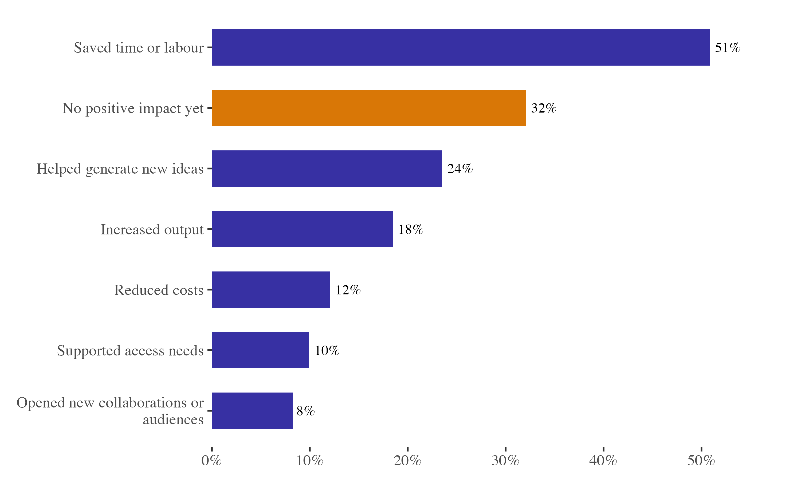
Impact
71% of artists don't know if their work was used to train AI
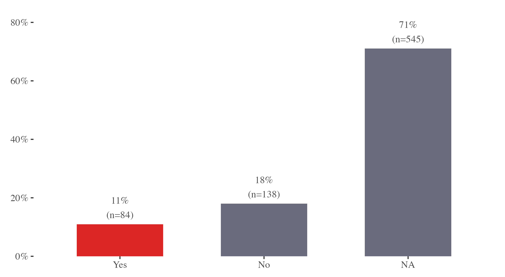
Impact
38% report reduced trust in originality as AI's biggest impact

Voices
Real impact: lost commissions and career disruption
"I recently lost a commission job where the client wanted something that fell between fully cartoon and AI-generated images they sent for reference. Their own experimentation with AI negatively impacted their understanding of sketches, drafts, and revisions."
"I am a photographer and photo editor and have lost clients to places that offer AI editing. I cannot compete with the prices… I have lost enough work and find it harder to find new clients."
Voices
Real concern: scraping and intellectual property
"Most visual arts platforms such as Saatchi, Artfinder and Etsy share images of artworks across social media without asking if it's OK. This significantly increases the risk of artworks being used without reference to copyright and reproduction rights."
"Scraped images are being used to train AI to create art and illustrators are not being reimbursed for usage. It's a violation of copyright."
Themes
Admin utility and IP concerns dominate open responses
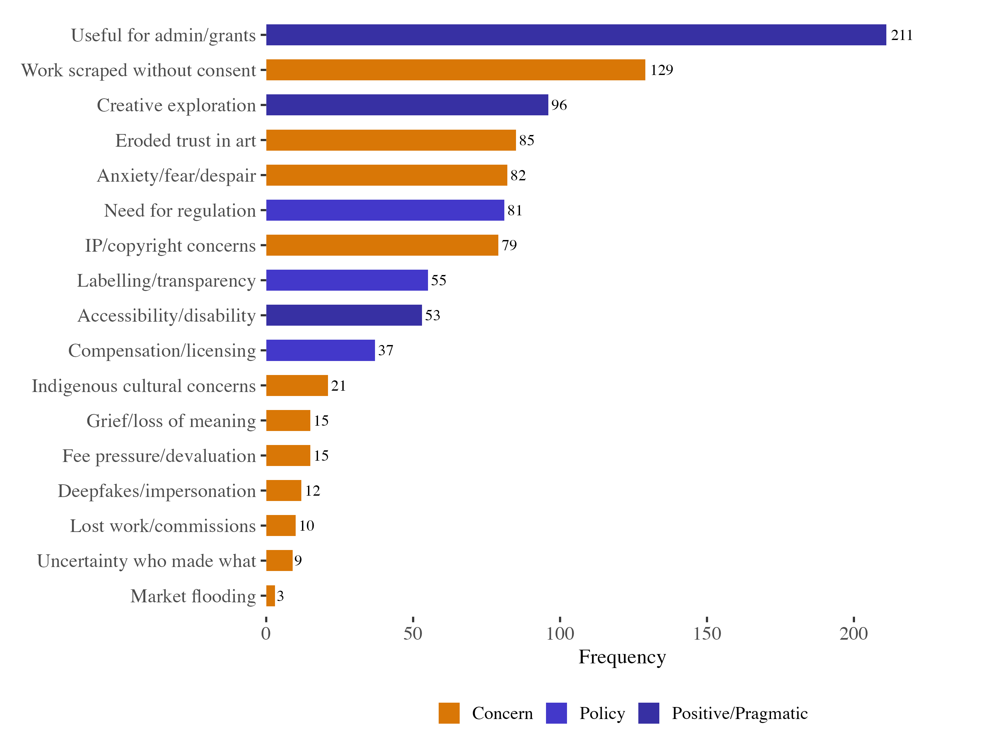
Policy
What Should Be Done?
Artists are united on transparency, compensation, and regulatory frameworks.
Policy
85% want visible 'generated by AI' labelling
Policy
71% say AI content should always be disclosed in all contexts
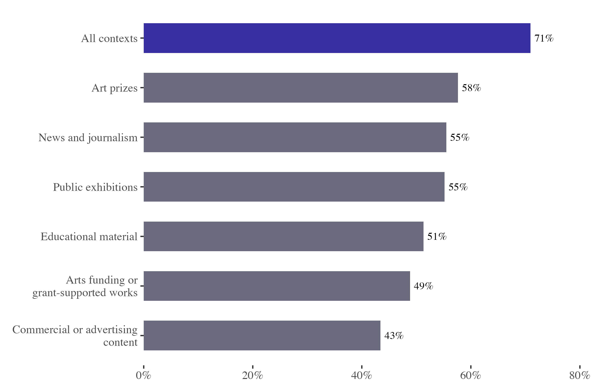
Policy
Platform opacity is the #1 barrier (76%)
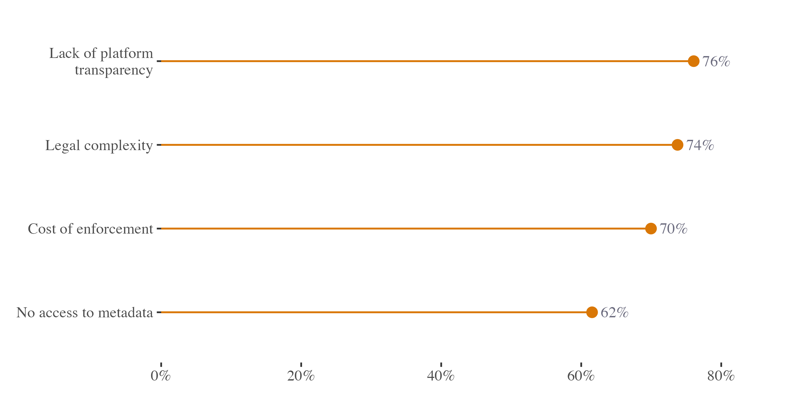
Policy
Artists want binding rules: 69% support a Code of Practice
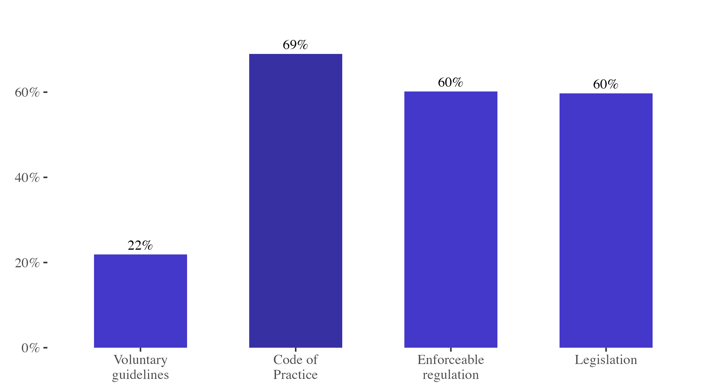
Policy
73% support compensation when their work trains AI

Policy
50% are unsure about collective licensing — an education opportunity
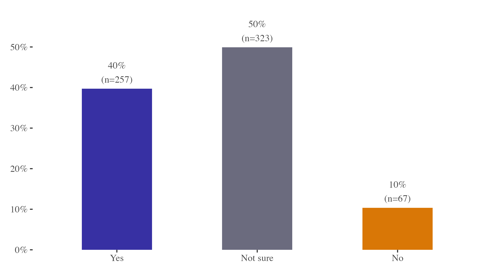
Summary
Five Key Findings
- 46% adoption: Nearly half use AI, but primarily for editing and drafting — not final artwork.
- Real economic impact: Lost commissions, fee pressure, and market saturation from AI-generated content.
- Opacity and vulnerability: 71% don't know if their work was scraped; 76% cite platform opacity as a barrier.
- Strong policy consensus: 85% want visible labelling; 73% support compensation; 69% want enforceable regulation.
- Sector is divided: Some embrace AI as a creative tool; many see it as an existential threat to authorship.
Closing
The Creative Reckoning
Generative AI is reshaping the visual arts sector. Australian artists are calling for transparency, compensation, and enforceable protections.